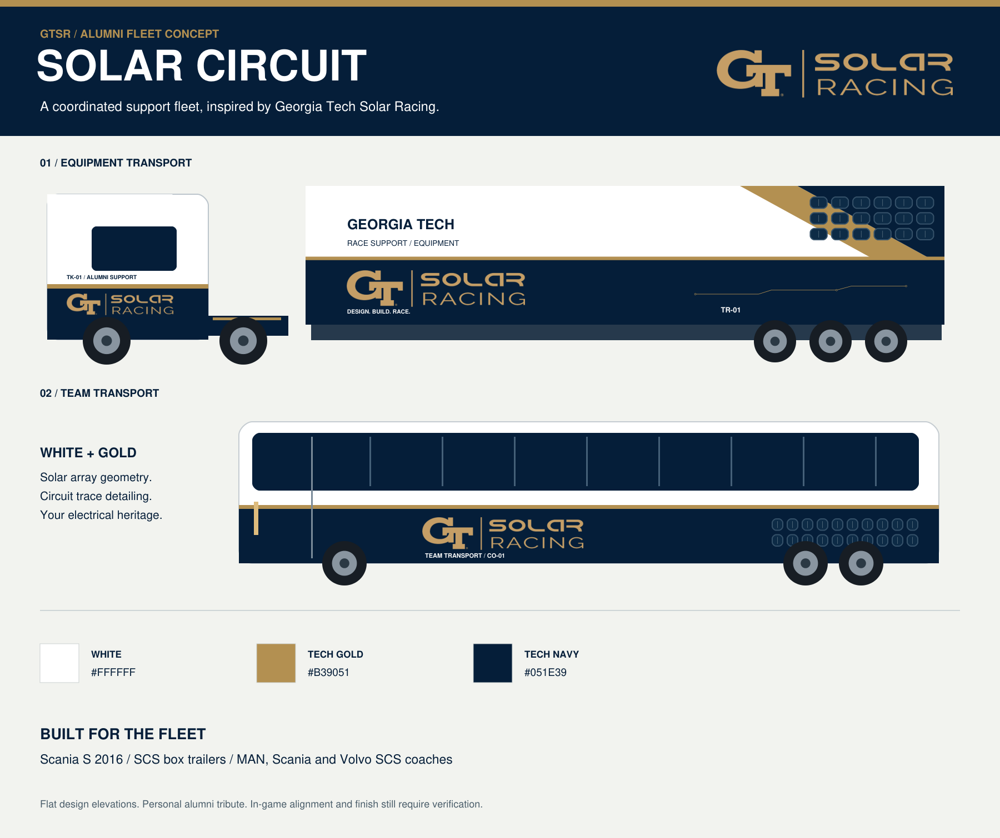
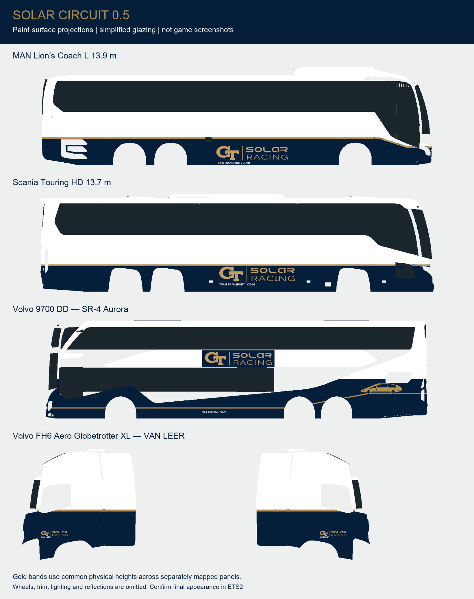
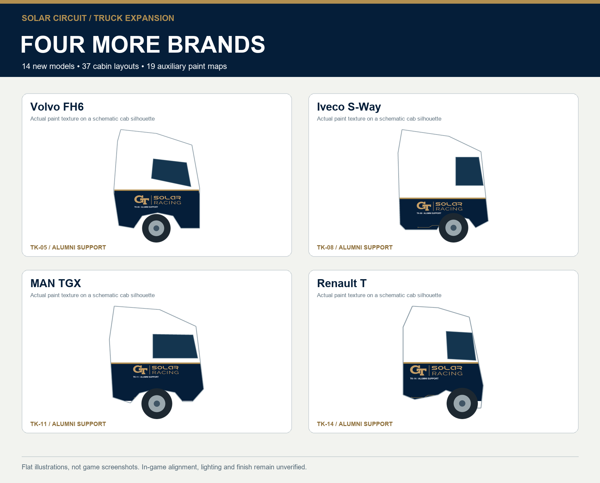
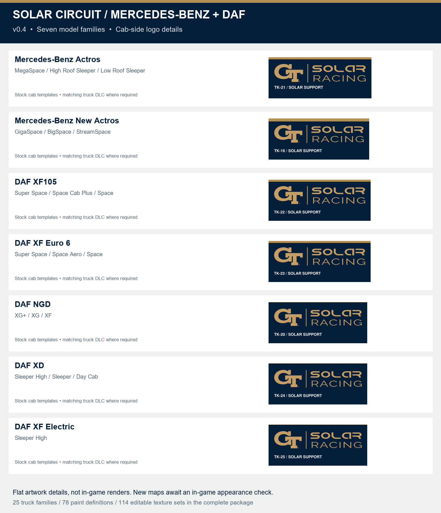
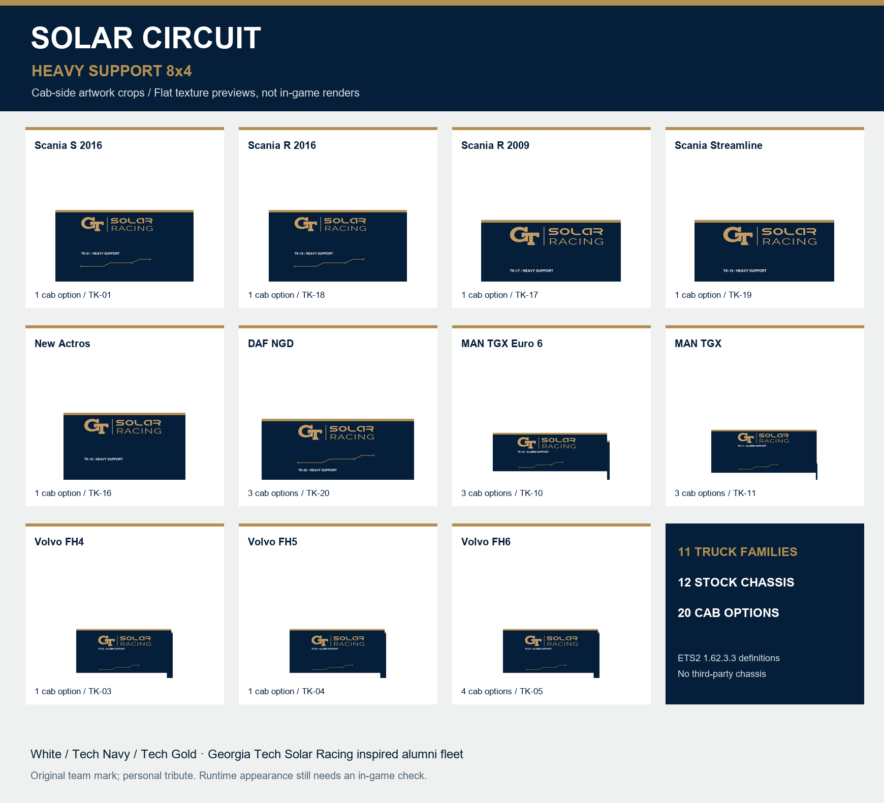

Flat design elevations, not in-game screenshots. The tractor drawing is schematic; the supplied truck texture is mapped to the SCS Scania S template.
Three separate .scs modules are supplied. The new Mercedes/DAF maps have passed static checks and template review, with in-game checking still needed. Your screenshots show earlier modules loading with visual issues. No active profile was modified by this build.
Panel refinement — v0.5.0

Coordinated navy/gold across painted doors and end panels. Volvo 9700 DD gets an SR-4 Aurora silhouette on a gold road, with the team mark between window rows. FH6 Aero XL has one Van Leer selection for regular and stock 8×4 cabins; its duplicate Heavy entry is retired. Changes and upgrade instructions. Final appearance needs checking in ETS2.
The design
White upper panels keep the fleet clean and recognisable. Navy lower panels carry the unchanged gold team logo, with a gold sweep and solar-cell geometry toward the rear. A circuit trace and an optional Electrical Lead / Alumni Support decal make the theme personal to your role on the team. “Solar Circuit” is the name of this new fleet design.
#FFFFFF · 255, 255, 255
#B39051 · 179, 144, 81
#051E39 · 5, 30, 57
Colors match the current team CSS and Georgia Tech color guide. The downloaded team logo retains its original gold; it is not recolored to force an exact swatch match. In-game lighting and materials will affect appearance.
Truck expansion

The updated truck module includes 25 truck families and 77 paint-job definitions, with all 20 standard 8×4 cabin/chassis combinations covered. Full truck coverage and upgrade instructions. Remove or deactivate older truck and coach modules before enabling truck v0.5 and coach v0.2. Exact 8×4 coverage.
Mercedes-Benz and DAF

Actros, New Actros, XF105, XF Euro 6, NGD XF/XG/XG+, XD and XF Electric. 19 new standard-cab definitions and four refreshed heavy maps. Exact cabin coverage and editing recipe.
Screenshot checklist for the next in-game review. The three photographed coach bodies and selected FH6 are refined in v0.5.0; other earlier issues remain outside this patch.
Heavy Support 8×4

11 truck families, 12 stock chassis definitions, 20 compatible cab options. Separate Heavy Support paint jobs include the Scania/Actros equipment-tower maps and DAF XF, XG and XG+.
Choose your modules
| Module | Mapped vehicles | Limits |
|---|---|---|
| 25-family truck fleet | Scania S; Volvo FH3/FH4/FH5/FH6 and Aero; Iveco Stralis/Hi-Way/S-Way; MAN TGX Euro 5/Euro 6/GX-GM-GN; Renault Magnum/Premium/T/E-Tech T. Plus DAF NGD, Mercedes New Actros and Scania R/Streamline in the listed 8×4 configurations. 77 paint definitions. Adds all seven Mercedes-Benz and DAF families listed above. | All standard SCS 8×4 chassis observed in 1.62.3.3 are covered. Third-party chassis are excluded. Optional truck sections require their matching truck DLC. Chassis and tuning combinations need visual checks. |
| SCS box trailers | Owned curtainsider and dry-freighter body maps in Long, Double and B-Double layouts. Related insulated, refrigerated, side-door and moving-floor bodies are assigned the matching dry atlas. | Other trailer makers are not mapped. Related body variants need individual visual checks. Painted accessories use solid navy. |
| SCS coaches | MAN Lion’s Coach 13.9 m / 12.1 m; Scania Touring HD 13.7 m / 12.9 m; Volvo 9700 DD. Five separate body maps. | Requires SCS Coaches DLC. Third-party coaches and DBus World vehicle mods are not mapped. |
Apply it to your fleet
- Copy the desired
.scsmodules frommodsinto your active ETS2 user-datamodfolder. The usual location isDocuments\Euro Truck Simulator 2\mod; OneDrive or a custom home folder can change it. Find the user-data folder containing your currentgame.log.txt. - Activate the modules in Mod Manager. They can be used together. If a conflicting mod overrides these paint jobs, give Solar Circuit higher priority.
- On the FH6 Aero XL choose Solar Circuit - Van Leer. Switch off its retired Heavy selection before upgrading, or choose Van Leer afterward. Other vehicles retain Solar Circuit - Alumni Support or Solar Circuit - Heavy Support 8x4 on a compatible 8×4 cab/chassis. Price: €1,000; unlock level: 0.
- Before applying across the fleet, check both sides, doors, roof, front, rear and painted accessories in daylight. Check each cabin/body you use and look for mirrored lettering or seams.
Use your normal profile backup when trying new mods. To uninstall, select another paint job, then deactivate the module. These packages contain paint jobs only; no map or vehicle-model replacements are included.
Editable assets
Reusable kit
SVG and PNG masters: trailer side, coach side, door plaque, rear panel, solar-cell strip, transparent circuit trace, fleet numbers and Electrical Lead decal.
View the electrical-lead decal
Vehicle maps
118 texture sets, supplied as SVG, PNG and DDS. Includes 29 new Mercedes/DAF maps, four refreshed heavy maps and three solid fallback colors. The texture index lists their exact dimensions.
Open texture indexEdit SVG files at their original canvas sizes. Keep logos proportional. Text remains editable using Arial or a substitute of your choice. Changes to a decal master do not automatically update the mapped vehicle files. The separate electrical-lead decal is optional and is not baked into the game textures.
Rebuild after editing
Install Python packages pillow and pymupdf, then run python source/rebuild.py. It reads the edited SVGs, regenerates PNG/DDS exports, and writes updated modules to rebuilt/mods. To rebuild one map, add --texture scania-s-high-roof. Use either original or rebuilt modules, not both duplicates.
Alternatively, open an .scs as a ZIP archive and replace DDS files at their existing paths. Keep manifest.sii at the archive root. The supplied DDS files use BC3/DXT5 with full mip chains.
Adapt to another truck or coach
Obtain the exact model, author, version and cabin/body template. Place the reusable artwork into that template, hide its wireframe and export at the required size. Generate model-specific definitions with Paint Job Packer or the vehicle author’s documented method. Coach mods may use separate window/opacity masks; preserve them. Test both sides and every accessory. A mapped texture from another model is not a universal skin.
Validation and remaining checks
Version 0.5.0: 1561/1561 refinement checks and 2,490 geometry gold-crossing probes passed, including painted doors. Selected rebuilds, recipe reproduction and preservation checks passed. Refinement report · Workflow report. All 37 new captures and the annotated suggestion reviewed against 25 older captures. Final in-game appearance remains untested.
Historical version 0.4.1: 1477/1477 focused checks and 1113/1113 workflow checks passed. Five template overlays and 25 new screenshots reviewed. Focused report · Workflow report. Corrected runtime appearance awaits confirmation.
Version 0.4: 1596/1596 static checks and 756/756 editing/reproduction checks passed. All seven Mercedes/DAF cab inventories and 93 accessory identifiers checked; 30 template overlays reviewed. Version 0.4 validation · Rebuild verification. New maps await an in-game appearance check.
Historical version 0.3: 1164/1164 checks passed. All 12 stock 8×4 chassis and 20 legal cab pairs were checked against installed definitions. All 10 new template overlays reviewed. Version 0.3 validation report.
Historical Version 0.2: 777/777 expansion checks passed; the historical version 0.1 report records 258/258 checks. No ETS2 runtime test performed.
Archive integrity, texture links, image decoding, DDS headers and mip sizes, unique paint-job identifiers, UI icon sizes and coach dependency were verified. Body placement was reviewed against the public templates. Truck and SCS box definitions were compared with the locally installed ETS2 1.62.3.3 files.
The selected coach maps now compensate for the mirroring and clipping shown in the supplied screenshots, with runtime confirmation still needed. Full runtime coverage, side reading direction, seams, gloss, every related trailer variant, multiplayer and interaction with other vehicle mods remain unverified. Coach definitions follow Paint Job Packer v2.1.3. No blanket compatibility claim is made for older or later ETS2 versions.
Version 0.2 expansion validation · Historical version 0.1 validation report · Full instructions as text
Research and Discord
The team website supplied the logo, current palette and the “Design. Build. Race.” wording. The palette was cross-checked against Georgia Tech’s current brand guide. Public SCS documentation and Carsmaniac’s template pack and code supplied the mod structure and vehicle layouts.
The provided Discord invite resolved to ProMods Community. Its public invite metadata was accessible, but channel discussions were not. No Discord channel content was read, no account joined and no messages were posted.